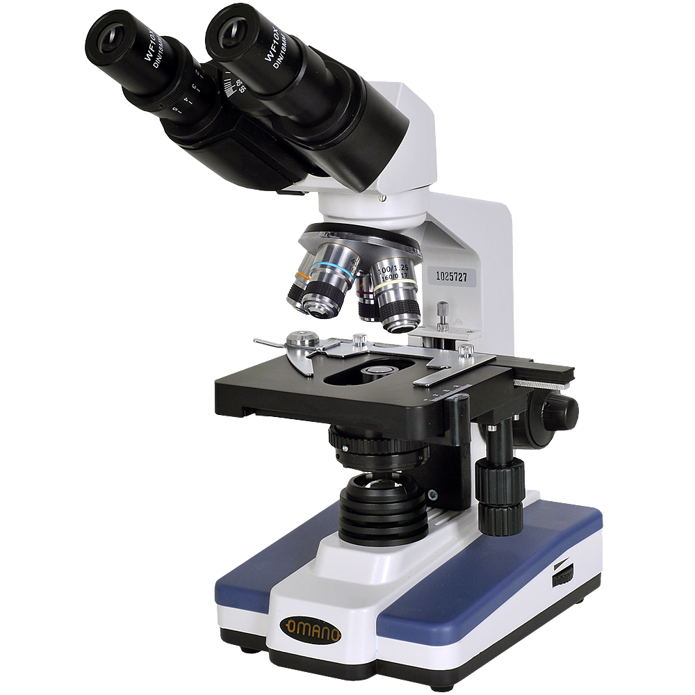
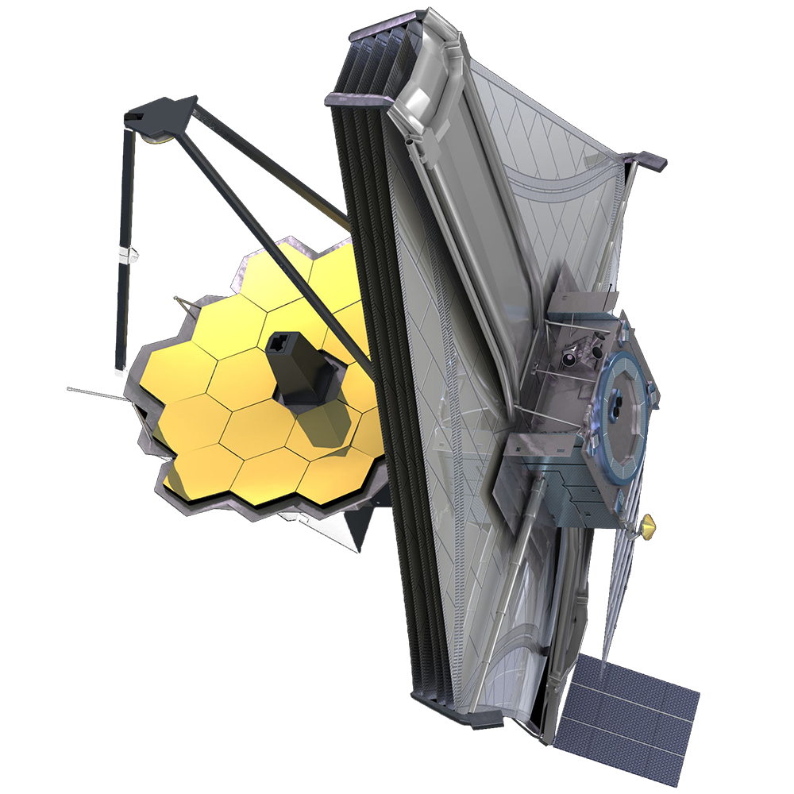
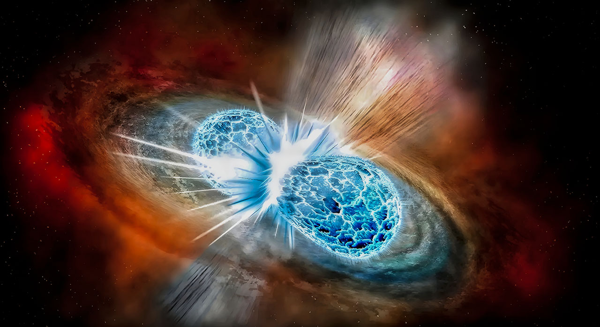
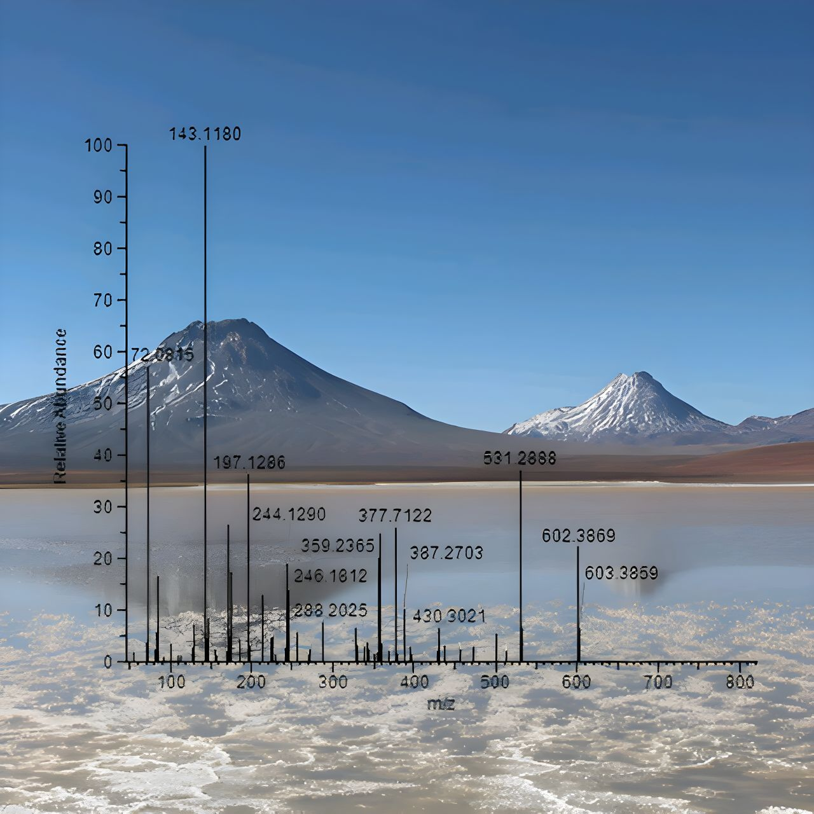
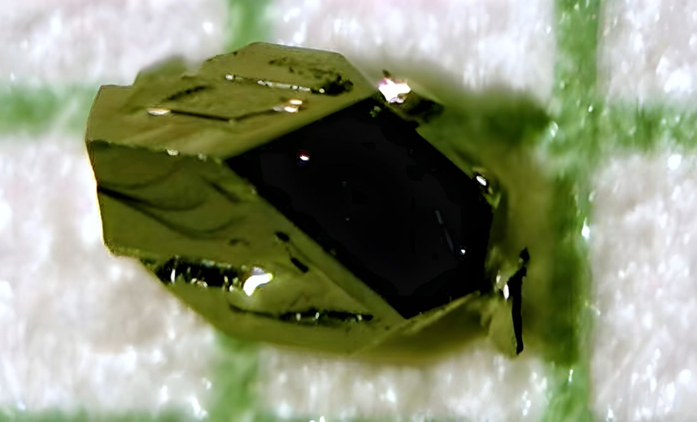
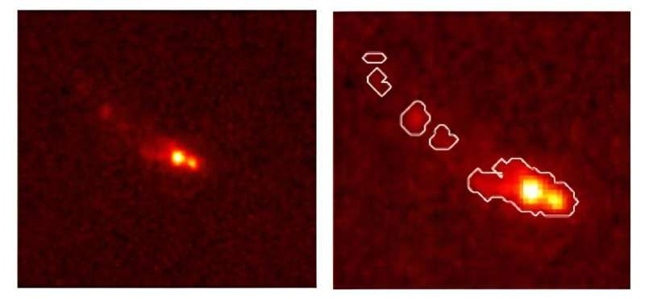
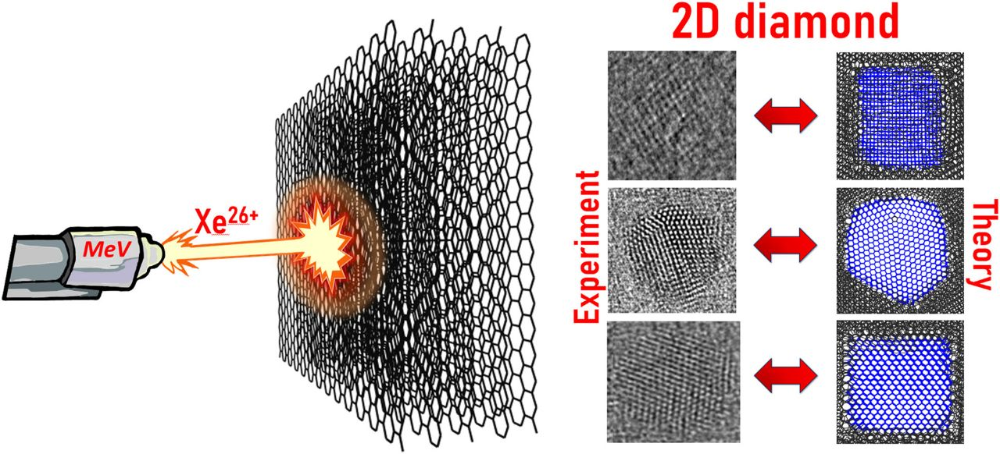
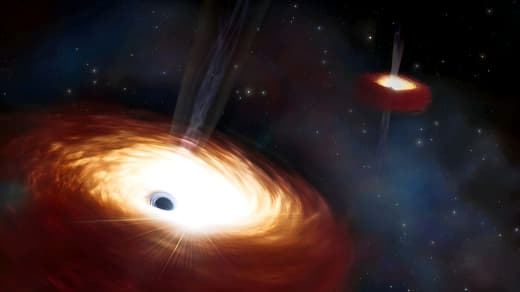
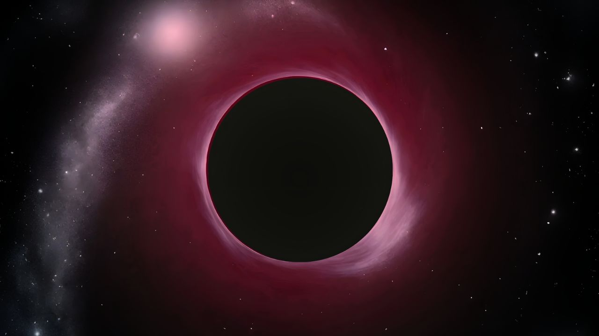
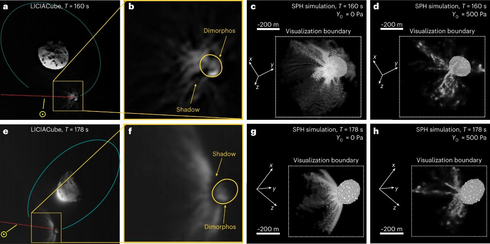

 |
Это сайт для интеллектуально развитых, развивающихся и всех интересующихся новостями науки, свежими идеями, открытиями, а также простыми объяснениями сложных вопросов.
В нашем Telegram канале больше научных новостей, а также интересные обсуждения в комментариях, уважительная атмосфера общения. |
 |
|---|
15 Марта 2024

Столкновение двух нейтронных звезд на расстоянии около 130 миллионов световых лет от Земли и уникальная физика, созданная этим слиянием, вероятно, помогут лучше понять тёмную материю.
Новое исследование, проведенное физиком из Вашингтонского университета Бхупалом Девом, предполагает, что слияние нейтронных звезд , обнаруженное как сигнал гравитационной волны GW170817, может помочь наложить ограничения на гипотетические частицы - аксионы - одни из главных кандидатов на роль темной материи.{kind=link}
Столкновение двух нейтронных звезд на расстоянии около 130 миллионов световых лет от Земли и уникальная физика, созданная этим слиянием, вероятно, помогут лучше понять тёмную материю.
В результате столкновения нейтронных звезд они разбрызгивают вещество, богатое свободными нейтронами. Эти нейтроны могут быть поглощены атомными ядрами в процессе быстрого захвата или « r-процесса. Что приводит к созданию нестабильных массивных атомных ядер, которые в конечном итоге распадаются с образованием более легких элементов, таких, как, например, золото. Этот распад также производит мощное излучение, которое астрономы видят как Килоновую. В результате слияния также образуется недолговечный плотный остаток двух нейтронных звезд, который, чаще всего, быстро коллапсирует, порождая чёрную дыру.
Остаток примерно на секунду становится гораздо горячее чем любые звезды прежде чем превратиться в более крупную нейтронную звезду или черную дыру, в зависимости от начальной массы. Дев считает, что этот остаток является идеальной фабрикой для производства экзотических частиц, таких как, например, аксионы.
Эти частицы могут покинуть место слияния нейтронных звёзд и распасться на другие частицы. Дев и его коллеги считают, что распад этих частиц порождает уникальный электромагнитный сигнал, который можно уловить гамма-телескопами, например космическим телескопом НАСА - Ферми. А Ферми и иные инструменты для обнаружения гамма-лучей смогут сосредоточиться на столкновениях нейтронных звезд для сбора данных, которые могут улучшить понимание учёными аксионов и подобных им частиц.
В конечном итоге это может привести к открытию частиц составляющих темную материю и решению одного из самых актуальных вопросов космологии - из чего состоит недостающая материя Вселенной?

Ученые идентифицировали экстремофильные микроорганизмы по фрагментам пептида, что сможет помочь найти инопланетную жизнь.
В "Journal of Proteome Research" учёные подробно описали метод более точной идентификации экстремофилов, основанный на исследовании фрагментов белка, а не генетического материала. Исследование выявило две новые выносливые бактерии из высокогорных озер в Чили — среды, похожей на ранний Марс.{kind=link}
Ученые идентифицировали экстремофильные микроорганизмы по фрагментам пептида, что сможет помочь найти инопланетную жизнь.
В настоящее время ученые используют секвенирование отдельных генов для идентификации земных микроорганизмов на основе их ДНК. Однако современные методы не позволяют различить близкородственные виды экстремофилов. Ральф Мёллер из отделения радиационной биологии, Институт аэрокосмической медицины, Немецкий аэрокосмический центр, Кёльн, Германия и его коллеги проверили - смогут ли они идентифицировать экстремофилов, используя лишь их белковую сигнатуру, а не последовательность генов. Они начали свои исследования с образцов воды из пяти высокогорных андских озер в чилийском Альтиплано. Из этих образцов учёные культивировали 66 микробов, а затем проверили - какой из методов лучше идентифицирует микроорганизмы.
Традиционное секвенирование генов сравнивало нуклеотиды гена 16s рРНК с базой данных для идентификации. Новый метод «протеотипирования» анализировал фрагменты белков, известных как пептиды, для создания пептидных сигнатур, которые группа учёных использовала для идентификации микроорганизмов из баз данных протеомов.
С помощью этого метода они идентифицировали 63 из 66 микроорганизмов, выращенных в образцах высокогорного озера. Для трех микроорганизмов, которые не удалось идентифицировать с помощью секвенирования генов, поскольку их генетическая информация отсутствовала в доступной базе данных, протеотипирование выявило два потенциально новых типа экстремофильных бактерий.
Эти результаты позволяют предположить, что протеотипирование может быть более полным решением для идентификации экстремофильных микроорганизмов из небольших биологических образцов. Учёные говорят, что профилирование белков может когда-нибудь помочь нам найти и идентифицировать внеземную жизнь и лучше исследовать биоразнообразие на нашей планете.
14 Марта 2024

Ученые впервые исследовали нетрадиционный сверхтемпературный сверхпроводник, который встречается в природе в минеральной форме.
Миассит — один из четырех минералов, обнаруженных в природе, которые при выращивании в лаборатории действуют как сверхпроводники. Исследование миассита показало, что это нетрадиционный сверхпроводник со свойствами, подобными высокотемпературным сверхпроводникам.{kind=link}
Ученые впервые исследовали нетрадиционный сверхтемпературный сверхпроводник, который встречается в природе в минеральной форме.
По словам Руслана Прозорова, ученого из Ames Lab - национальная лаборатория Министерства энергетики США, расположенная в Эймсе, штат Айова, все подобные материалы выращены в лаборатории. Этот факт привел к всеобщему убеждению, что нетрадиционная сверхпроводимость не является естественным явлением.
Прозоров объяснил, что найти сверхпроводники в природе сложно, поскольку большинство сверхпроводящих элементов и соединений являются металлами и имеют тенденцию вступать в реакцию с другими элементами, например с кислородом. Он сказал, что миассит представляет собой интересный минерал по нескольким причинам, одной из которых является его сложная химическая формула. "Интуитивно думаешь, что это нечто, что создается намеренно в ходе целенаправленного поиска, и что оно не может существовать в природе, - сказал Прозоров. - Но оказывается, что оно существует". Он был обнаружен у реки Миасс в Челябинской области России.
Ранее выращивание кристаллов миассита было частью масштабных усилий по открытию соединений, сочетающих в себе редкие и очень тугоплавкие элементы, например Родий.
«Это все равно, что найти скрытую рыболовную яму, полную большой жирной рыбы. В системе Rh-S мы обнаружили три новых сверхпроводника. И благодаря детальным измерениям Руслана мы обнаружили, что миассит является нетрадиционным сверхпроводником», - сказал Пол Кэнфилд, заслуженный профессор физики и астрономии Университета штата Айова и ученый из лаборатории Эймса.
Обычные сверхпроводники хорошо изучены, но имеют низкие критические температуры. Критическая температура — это самая высокая температура, при которой материал действует как сверхпроводник.
В 1980-х годах ученые открыли нетрадиционные сверхпроводники, многие из которых имеют гораздо более высокие критические температуры. По словам Руслана Прозорова - все эти материалы выращены в лаборатории. Этот факт привел к всеобщему убеждению, что нетрадиционная сверхпроводимость не является естественным явлением. Однако ученые ошибались они существуют в природе.
Стрим запуска Starship с участием Владимира Сурдина и Алексея Семихатова.
Старт прошел успешно — все 33 двигателя ракеты-носителя отработали штатно и вывели Starship на запланированную высоту в заданной точке, где корабль отделился от носителя и направился в космос. Саму первую ступень мягко посадить на воду в этот раз не удалось — Super Heavy при посадке развил слишком большую скорость и ударился о воду.
В полете самого корабля инженеры SpaceX провели несколько технических испытаний, в частности открыли люк, чтобы проверить возможность в будущем выводить через него спутники.
Инженеры также сумели перекачать топливо из одного бака в другой. Пока эта процедура происходит внутри корабля, но в SpaceX считают это первым тестом возможной дозаправки кораблей на орбите.
Последний запланированный тест — повторное включение двигателя, чтобы направить корабль к месту падения в Индийском океане, не состоялся, поскольку Starship и так сошел с орбиты в нужной точке. Но скорость схода с орбиты была слишком велика, в результате чего корабль вошел в плотные слои атмосферы слишком быстро, перегрелся и развалился. Все фрагменты упали примерно в заданную точку.
12 Марта 2024

Новые детальные изображения помогают понять почему рост галактик в ранней Вселенной был намного быстрее, чем считалось ранее.
Успешный запуск космического телескопа Джеймса Уэбба (JWST) раздвинул границы того, что мы можем видеть.
Сейчас проводятся наблюдения галактик образовавшихся в первые 500 миллионов лет после Большого взрыва, когда возраст Вселенной составлял менее 5% от ее нынешнего возраста.
Последние наблюдения показывают, что галактики более массивны и зрелы, чем считалось ранее для таких ранних времен, что помогает пересмотреть наше понимание формирования и эволюции галактик.{kind=link}
Новые детальные изображения помогают понять почему рост галактик в ранней Вселенной был намного быстрее, чем считалось ранее.
Международная исследовательская группа недавно провела беспрецедентно подробные наблюдения одной из самых ранних галактик - Gz9p3. Учёные обнаружили, что Gz9p3 оказалась гораздо более массивной и зрелой, чем ожидалось для такой ранней Вселенной. Это, безусловно, самый массивный объект, подтвержденный за это время. По расчетам, он в 10 раз массивнее, чем любая другая галактика, обнаруженная в том возрасте Вселенной. В ходе наблюдений выяснилось, что Gz9p3 не только огромна, но и её сложная форма сразу идентифицирует её не как отдельную галактику, а как одно из самых ранних слияний нескольких галактик из когда-либо ранее наблюдавшихся. Затем астрономы смогли заглянуть глубже, чтобы описать популяцию звезд, составляющих эти сливающиеся галактики. Используя JWST, они смогли изучить их спектр.
Большинство ранних исследований этих очень далеких объектов показывало только очень молодые звезды, потому что более молодые звезды ярче и поэтому их свет доминирует в данных полученных изображений. Например, молодая яркая популяция, возникшая в результате слияния галактик возрастом менее нескольких миллионов лет затмевает старую популяцию, возраст которой уже превышает 100 миллионов лет. Используя технику спектроскопии ученые смогли провести настолько подробные наблюдения, что стало можно различить две популяции. Конкретные элементы, обнаруженные в спектре (включая кремний, углерод и железо), показывают, что вторая более древняя популяция должна была существовать, чтобы обогатить галактику множеством химических веществ.
Удивляет не только размер галактик, но и скорость, с которой они достигли такого химически зрелого состояния. Эти наблюдения предоставляют доказательства быстрого и эффективного образования звезд и металлов связанного с продолжающимися слияниями галактик, демонстрируя, что массивные галактики с несколькими миллиардами звезд существовали раньше, чем ожидалось.
Изолированные галактики создают свою популяцию звезд из своих ограниченных резервуаров газа, однако для галактик это путь к медленному росту. Взаимодействия между галактиками могут привлекать новые притоки газа и пыли, обеспечивая топливо для быстрого звездообразования, а слияния обеспечивают еще более быструю возможность для накопления и роста массы. Все крупнейшие галактики в нашей современной Вселенной имеют историю слияний, включая наш Млечный Путь, который вырос до своих нынешних размеров в результате последовательных слияний с меньшими галактиками. Эти наблюдения Gz9p3 показывают, что галактики могли быстро накапливать массу в ранней Вселенной посредством слияний, причем эффективность звездообразования была выше, чем ожидали учёные.
Это и другие наблюдения с использованием JWST заставляют астрофизиков скорректировать свои модели ранних лет существования Вселенной. Эти новые результаты являются своевременными, поскольку мы приближаемся к двухлетней отметке научных наблюдений, проводимых с использованием JWST. По мере того как общее количество наблюдаемых галактик растет, астрономы, изучающие раннюю Вселенную, переходят от фазы открытия к периоду, когда у нас будут достаточно большие выборки, чтобы начать строить и совершенствовать новые модели. Никогда еще не было более захватывающего времени для разгадки тайн ранней Вселенной.
11 Марта 2024
В этом выпуске вы узнаете об ошеломляющих открытиях, которые позволят разгадать некоторые загадки Вселенной. Что такое гравитационные волны? Какие звуки издает Вселенная? Где находятся планеты, на которых существует жизнь? На эти и многие другие вопросы вы найдете ответы в этом видео.
10 Марта 2024
{kind=link}
Если бы NGC 4423 рассматривалась не в профиль, то она напоминала бы форму, которую мы больше всего ассоциируем со спиральными галактиками: эффектные изогнутые рукава, исходящие из яркого центра, перемежающиеся с более тусклыми и менее населенными областями. Но при наблюдении за небом мы ограничены относительным расположением Земли и объектов, которые мы наблюдаем.
Эта галактика была открыта ещё в 1784 году английским астрономом Уильямом Гершелем с помощью оптического телескопа диаметром 47,5 см.
{kind=link}
{kind=link}
Когда астронавты "Артемиды" стартуют с Земли, они будут находиться на четырехместном космическом корабле Orion. Orion доставит их на лунную орбиту, где двое астронавтов пересядут на Starship HLS, который доставит их на поверхность Луны. В будущем лунная орбитальная платформа-шлюз Gateway будет находиться на орбите вокруг Луны, и астронавты будут перемещаться с космического корабля к платформе и к Starship HLS.
Эти перемещения представляют собой сложные и рискованные маневры. Система стыковки, которая обеспечит эту работу, называется системой стыковки Starship HLS от SpaceX. Она основана на успешной системе стыковки Dragon 2 от SpaceX. Система Dragon 2 позволяет космическому кораблю Dragon 2 состыковываться с МКС для передачи экипажа и оборудования. Она используется с 2020 года.
НАСА и SpaceX заняты тестированием новой системы стыковки Starship HLS. Недавно они завершили 10-дневные испытания в Космическом центре Джонсона в Хьюстоне, штат Техас. Они провели более 200 различных сценариев стыковки с использованием различных скоростей и углов. Результаты этого полномасштабного тестирования будут использованы в текущих компьютерных моделях системы, которые, в свою очередь, будут применены при будущих испытаниях и проектировании.
Система имеет как активный, так и пассивный режим. Когда два космических аппарата состыковываются, один из них активен, а другой пассивен. Активный называется преследователем, а другой - целью.
В ходе этого раунда испытаний NASA и SpaceX продемонстрировали процедуру мягкого захвата. При пассивном захвате преследователь выдвигает свою систему мягкого захвата (SCS), в то время как система целевого космического корабля остается втянутой. Преследователь выполняет всю работу, используя защелки и другие механизмы для захвата целевого космического корабля и завершения стыковки.
SpaceX уже достигла ряда важных этапов в разработке Starship HLS. Эти этапы касались выработки электроэнергии, связи, наведения и навигации, двигательной установки, жизнеобеспечения и защиты космической среды.
{kind=link}
{kind=link}
9 Марта 2024
{kind=link}
США подтвердили наблюдения инопланетных кораблей, они производили реверс-инжиниринг внеземных технологий?
«Все следственные усилия на всех уровнях квалификации пришли к выводу, что большинство наблюдений были обычными объектами и явлениями, и результатом неправильной идентификации», говорится в отчете.
«Не было найдено никаких эмпирических доказательств утверждений о том, что правительство США и частные компании занимаются реверс-инжинирингом внеземных технологий. Неточные заявления о реверс-инжиниринге в значительной степени являются результатом циклических сообщений от группы людей, которые считают, что это так, несмотря на отсутствие каких-либо доказательств».
Расследование Александра Соколова дела 3200-летней давности о настоящем отморозке из древнего Египта.
Познакомьтесь: древнеегипетский плохой парень. Возможно, даже, древнейший плохой парень в истории. Взяточник, вор, насильник и убийца. И одновременно один из самых известных древних египтян нецарской и незнатной крови. 3200 лет назад бригадир по имени Панеб был настоящим отморозком.
Александр Соколов - научный журналист, редактор АНТРОПОГЕНЕЗ.РУ, автор книг: «Мифы об эволюции человека», «Ученые скрывают» и «Странная обезьяна».
Взгляд на кипящую поверхность Бетельгейзе.
Быстрое вращение не вызывало бы удивления, если бы Бетельгейзе была бы близка к идеально круглой сфере. Однако поверхность Бетельгейзе представляет собой динамичный мир, управляемый конвекцией. Мы можем наблюдать конвекцию в нашей повседневной жизни, когда кипятим воду, но у Бетельгейзе этот процесс гораздо более мощный: пузырьки кипения могут достигать размеров орбиты Земли вокруг Солнца и покрывать большую часть поверхности Бетельгейзе. Они поднимаются и опускаются со скоростью до 30 км/с. Скопление кипящих пузырей поднимается с одной стороны звезды, а другая группа пузырей опускается с другой стороны. Из-за ограниченного разрешения телескопов такие конвективные движения будут размыты в реальных наблюдениях, что создает иллюзию быстрого вращения.
8 Марта 2024
{kind=link}
Существующая энергетическая политика Китая требует, чтобы электростанции, работающие на возобновляемых источниках энергии, имели возможность хранения от 20% своей номинальной генерируемой мощности в течение как минимум двух-четырех часов. Energy Vault утверждает, что продолжительность хранения энергии со временем будет увеличиваться, поскольку в скором времени доля возобновляемой энергии будет составлять большую часть электроэнергии в национальной сети Китая.
7 Марта 2024
{kind=link}
В стратосфере газообразный диоксид серы из вулканов подвергается химическим реакциям, конденсируясь в последствии в жидкие аэрозольные частицы. Эти частицы могут влиять на температуру поверхности Земли двумя противоположными способами: отражая входящий солнечный свет или улавливая исходящую от поверхности тепловую энергию, что приводит напротив к эффекту парникового потепления.
Ученые рассчитали - в какой степени диаметр частиц вулканического аэрозоля влияет на температуру после извержения. Чем меньше и плотнее частицы, тем выше их способность блокировать солнечный свет. Но оценить размер частиц крайне сложно, поскольку предыдущие суперизвержения не оставили надежных физических свидетельств. В атмосфере размер частиц меняется по мере их коагуляции и конденсации. Даже когда частицы падают обратно на Землю они не оставляют четкого физического следа из-за смешивания с наземной средой и уплотнения.
Моделируя суперизвержения с использованием различных размеров частиц, исследователи обнаружили, что суперизвержения могут быть неспособны изменить глобальную температуру значительно больше, чем крупнейшие извержения современности. Например, извержение горы Пинатубо на Филиппинах в 1991 году привело к падению глобальной температуры примерно на полградуса в течение двух лет.
Чтобы квалифицироваться как суперизвержение вулкан должен выпустить более 1000 кубических километров магмы. Такие извержения чрезвычайно редки. Последнее подобное суперизвержение произошло более 22 000 лет назад в Новой Зеландии. Самым известным примером может быть извержение Йеллоустонского супервулкана около 2 миллионов лет назад.
{kind=link}
{kind=link}
Федеральное управление гражданской авиации закрыло расследование инцидента в прошлом месяце после того, как определило 17 корректирующих действий, которые SpaceX должна будет предпринять, прежде чем она сможет получить следующий зеленый свет.
5 Марта 2024
{kind=link}
Команда ученых также обнаружила признаки присутствия ионизированных химических элементов, которые обычно наблюдаются вблизи аккрецирующих сверхмассивных черных дыр. Кроме того, они обнаружили, что галактика испускает очень мощный галактический ветер. Такие высокоскоростные ветры обычно вызываются процессами связанными с энергичной аккрецией сверхмассивных черных дыр.
Полученные данные показали, что GN-z11 содержит сверхмассивную черную дыру массой два миллиона солнечных масс, находящуюся в очень активной фазе поглощения материи. В результате чего она такая яркая.
Вторая группа ученых использовала инструмент - NIRSpec Джеймса Уэбба - спектрограф ближнего инфракрасного диапазона, чтобы найти газообразный сгусток гелия в ореоле окружающем GN-z11.
«Тот факт, что мы не видим ничего, кроме гелия, предполагает, что этот комок должен быть довольно нетронутым. Это то, чего ожидали теории и симуляции вблизи особенно массивных галактик этих эпох — что в гало должны выжить карманы чистого газа, и они могут коллапсировать, и образовывать звездные скопления населения III.
Поиск до сих пор гипотетических звезд населения III — первого поколения звезд, образовавшихся почти полностью из водорода и гелия — является одной из важнейших целей современной астрофизики. Ожидается, что эти звезды будут очень массивными, очень яркими и очень горячими. Их признаком было бы наличие ионизированного гелия и отсутствие химических элементов тяжелее гелия.
Формирование первых звезд и галактик знаменует собой фундаментальный сдвиг в космической истории, в ходе которого Вселенная превратилась из темного и относительно однородного состояния в высокоструктурированную и сложную среду, которую мы видим сегодня.
В будущих наблюдениях астрономы будут более глубоко исследовать GN-z11 в надежде укрепить аргументы в пользу звезд населения III, которые могут формироваться в её гало.
Исследование нетронутого газового сгустка в гало GN-z11 было принято к публикации в журнале Astronomy & Astrophysicals и в настоящее время доступно на сервере препринтов arXiv. Результаты исследования черной дыры GN-z11 были опубликованы в журнале Nature.
{kind=link}

Группа российских ученых исследовала формирование наноалмазных структур в многослойном графене путем их облучения ионами ксенона.
Использование многослойного графена в качестве мишени для облучения открывает новые возможности для получения специфических ультратонких алмазных 2D пленок. Данное исследование вызывает значительный интерес из-за их уникальных характеристик, которые делают их перспективными для будущих технологических достижений в различных отраслях промышленности, включая электронику, оптику и медицину.{kind=link}
Группа российских ученых исследовала формирование наноалмазных структур в многослойном графене путем их облучения ионами ксенона.
Графен был синтезирован на медной фольге при температуре 1070°C с использованием потока газовой смеси Ar–H2-CH4. Полученные пленки имели толщину приблизительно в 3 нм, что привело к образованию областей с несколькими слоями графена. Затем их переносили на специализированную сетку. В последствии образцы подвергались воздействию пучка ионов ксенона. Образовавшиеся наноструктуры в пленках графена имели правильную алмазную структуру, с вариациями в зависимости от количества ионов и их энергии.
3 Марта 2024
{kind=link}
Они разработали инновационную платформу с искусственным интеллектом CosmoAgent, использующую автономных агентов на базе больших языковых моделей (LLM). Моделирование показало, что при работе с неизвестными переменными следует учитывать стратегию осторожности и изоляции. Программа выступила за резкое сокращение отправки сигналов в космос, которые могут непреднамеренно раскрыть планетарные координаты землян и их технологический уровень другим цивилизациям, чьи намерения и возможности остаются неопределенными.
Однако, ученые при разработке программы ориентировались только на Землю, исходили из моральных и этических принципов, и эмоциональных реакций человека.
2 Марта 2024

Группа астрономов изучила самую тяжелую пару сверхмассивных черных дыр из когда-либо обнаруженных.
Слияние двух сверхмассивных черных дыр — явление, которое давно предсказывалось, но никогда не наблюдалось. Эта массивная пара дает подсказку о том, почему такое событие во Вселенной кажется столь маловероятным.{kind=link}
Группа астрономов изучила самую тяжелую пару сверхмассивных черных дыр из когда-либо обнаруженных.
Почти каждая массивная галактика имеет в своем центре сверхмассивную черную дыру. Когда две галактики сливаются, их черные дыры могут образовать двойную пару, то есть они находятся на связанной орбите друг с другом. Предполагается, что этим двойным системам суждено в конечном итоге слиться, но этого никогда не наблюдалось. Вопрос о том, возможно ли такое событие, был темой дискуссий среди астрономов на протяжении десятилетий.
Чтобы лучше понять динамику этой системы и ее застывшее слияние, ученые обратились к архивным данным спектрографа телескопа Gemini North (GMOS), который позволил им определить скорость звезд в окрестностях черных дыр.
Отличная чувствительность GMOS позволила ученым создать модель увеличения скорости звезд по мере приближения их к центру галактики. Благодаря этому они смогли определить общую массу находящихся в этой паре черных дыр.
По оценкам ученых, масса двойной системы, находящейся от нас на расстоянии в 750 миллионов световых лет, в 28 миллиардов раз превышает массу Солнца, что делает эту пару самой тяжелой двойной системой из когда-либо обнаруженных и исследованных. Это исследование не только дает ценные данные о формировании этой двойной системы и истории ее родительской галактики, но и подтверждает давнюю теорию о том, что масса сверхмассивной двойной системы из черных дыр играет ключевую роль в остановке потенциального слияния.
После слияния галактик сверхмассивные черные дыры не сталкиваются лоб в лоб. Вместо этого они начинают пролетать мимо друг друга, выходя на связанную орбиту. При каждом их проходе энергия передается от черных дыр к окружающим звездам. По мере того, как они теряют энергию, пара притягивается все ближе и ближе, пока они не оказываются друг от друга всего в нескольких световых годах, где гравитация берет верх и они сливаются.
Этот процесс непосредственно наблюдался в парах черных дыр звездной массы — первый зарегистрированный случай был зарегистрирован в 2015 году, благодаря обнаружению гравитационных волн от их слияния, но никогда в двойных сверхмассивных системах.
Обладая новыми знаниями о чрезвычайно большой массе системы, команда пришла к выводу, что потребовалось бы исключительно большое количество звезд чтобы настолько замедлить орбиту двойной системы - чтобы приблизить их так близко. При этом черные дыры, по-видимому, расчистили почти всю материю вокруг себя, оставив ядро галактики без звезд, пыли и газа. Поскольку материала для дальнейшего замедления орбиты этой пары больше нет, их слияние застопорилось на заключительной стадии.
Обычно кажется, что галактики с более легкими парами черных дыр имеют достаточно звезд и массы, чтобы быстро сблизить их. Однако, эта пара настолько тяжелая, что для свершения этого потребовалось бы много звезд и газа. Но двойная система очистила центральную галактику от такой материи, оставив слияние застывшим и доступным для нашего изучения.
Преодолеет ли пара эту паузу космического неторопливого танца, и сольется в течение миллионов лет или навсегда останется в орбитально подвешенном состоянии еще предстоит выяснить в ходе дальнейших расчетов. Если они сольются, возникшие в результате гравитационные волны будут в сто миллионов раз мощнее чем волны возникающие в результате слияния черных дыр звездных масс.
Вполне возможно, что пара сможет преодолеть это последнее расстояние посредством еще одного слияния галактик, которое внедрит в систему дополнительный материал или, возможно, третью сверхмассивную черную дыру чтобы замедлить движение пары настолько чтобы она могла слиться. Однако, учитывая древний статус скопления галактик - B2 0402+379, новое галактическое слияние маловероятно.
Днем они неотличимы от обычных петуний, но благодаря некоторым генам, встроенным в природные биолюминесцентные грибы, их листья и цветы излучают мягкое зеленое свечение в темноте, которое подчеркивает естественные узоры растения. В то время как многие предыдущие светящиеся растения были созданы с использованием генов светлячков, петунии Firefly используют аналогичную светящемуся российскому табаку генную модификацию.
Чем здоровее растение и чем больше солнечного света оно получает днём, тем ярче свечение ночью — примерно до уровня лунного света. В отличие от других биолюминесцентных растений и животных, они не требуют специального питания или лечения.
1 Марта 2024

С помощью телескопа Джеймса Уэбба учёные обнаружили растущую в ранней Вселенной «чрезвычайно красную» сверхмассивную черную дыру.
Она в 40 миллионов раз массивнее Солнца и питает квазар, существовавший уже через 700 миллионов лет после Большого взрыва. Красный оттенок сверхмассивной черной дыры является результатом красного смещения из-за расширения Вселенной, а также из-за огромного количества газа и пыли окутывающих чёрную дыру. Кроме того, она неожиданно массивна по сравнению с галактикой, в которой она находится, а также быстро поглощает газ и пыль вокруг себя, от чего она постоянно растет.{kind=link}
С помощью телескопа Джеймса Уэбба учёные обнаружили растущую в ранней Вселенной «чрезвычайно красную» сверхмассивную черную дыру.
JWST использовал скопление галактик под названием Abell 2744 в качестве линзы для усиления света от галактик на заднем плане. Это выявило чрезвычайно красный квазар первоначально имевший форму трех красных точек. Затем ученые использовали компьютерную модель чтобы определить, что три красные точки являются несколькими изображениями одного и того же источника излучения, пришедшего от одного объекта.
28 Февраля 2024

Аппарат, столкнувшийся с астероидом, вероятно, не просто оставил на нём след, но изменил его форму.
27 сентября 2022 года аппарат DART, массой 580 кг, столкнулся с астероидом Диморф, массой около 5 миллиардов кг. Для сравнения, это эквивалентно столкновению муравья с большим автобусом. Но космический аппарат двигался со скоростью около 6 километров в секунду. Расчеты, основанные на наблюдениях за астероидом Диморф, показали, что астероид теперь вращается вокруг своего более крупного спутника быстрее чем раньше. 11 часов 22 минуты вместо 11 часов 55 минут.{kind=link}
Аппарат, столкнувшийся с астероидом, вероятно, не просто оставил на нём след, но изменил его форму.
Астероид состоит из весьма рыхлых обломков, скрепленных слабой силой тяжести. В результате удара с Диморфа отлетело много материала.
Этот материал теперь движется в направлении противоположном удару, сработав как реактивный выброс и замедлив астероид. Однако, дополнительное моделирование показало, что вместо очень большого кратера от удара Дарта, более вероятно, что вместо этого удар фактически изменил форму астероида.